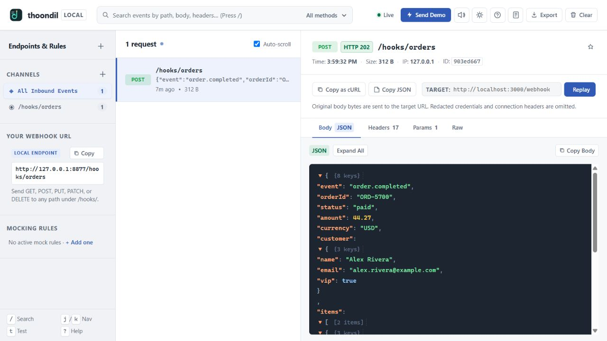
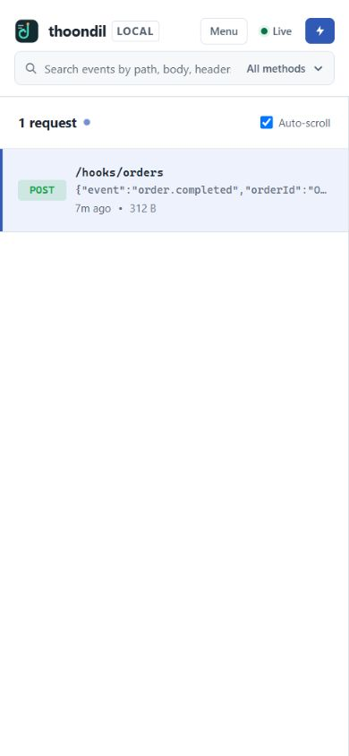
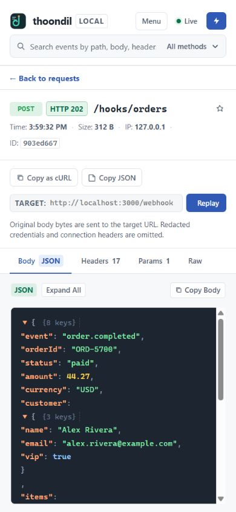

RUN WITH PYTHONPython 3.10+
git clone https://github.com/Dheena731/Webhook-viewer.git
cd Webhook-viewer
python3 server.pyOpen localhost:8080. The receiver binds to 127.0.0.1 by default.
Thoondil (தூண்டில்) gives webhook developers a clear view of what arrived and a fast way to send its original body to a local handler.

ReceiveGive each integration a path such as /hooks/orders.
InspectRead the method, body, headers, query, and response status in one place.
ReplaySend the original body bytes to a local target and see its HTTP response.
Pick one way to run the receiver. Then send a sample request or use the app’s Send Demo button.
git clone https://github.com/Dheena731/Webhook-viewer.git
cd Webhook-viewer
python3 server.pyOpen localhost:8080. The receiver binds to 127.0.0.1 by default.
git clone https://github.com/Dheena731/Webhook-viewer.git
cd Webhook-viewer
docker compose up --build -dOpen localhost:8090. The published port is local to your machine.
Point curl at a named path. The request appears in the live feed as soon as it arrives.
curl -X POST 'http://localhost:8080/hooks/orders?source=demo' \
-H 'Content-Type: application/json' \
-d '{"event":"order.created","id":"ord_42"}'The workspace keeps the incoming feed and request details close together. On a narrow screen, tap a request to open its inspector.
Named paths keep orders, payments, and test traffic easy to find. Search body text, headers, method, or path when the feed grows.
Inspect decoded JSON, form data, binary data represented as Base64, redacted headers, query parameters, and the captured response status.
Replay to an HTTP(S) localhost target. Thoondil sends the original body bytes, then reports the target’s status and response excerpt.


The browser UI uses the same endpoints you can call from scripts. All events and rules are held in memory.
| Method | Path | Purpose |
|---|---|---|
| GET, POST, PUT, PATCH, DELETE | /hooks/<name> | Capture an incoming request. /webhooks/<name> is an alias. |
| GET | /api/events | List events; filter with q, method, or path. |
| GET | /api/stream | Listen for webhook Server-Sent Events. |
| GET | /api/export | Download the decoded event history as JSON. |
| DELETE | /api/events | Clear current events. |
| POST | /api/replay | Send {"eventId":"…","targetUrl":"http://localhost:3000/hook"}. |
| GET, POST | /api/mock-rules | List or create an exact-path response rule. |
| DELETE | /api/mock-rules?id=<id> | Remove a response rule. |
| GET | /healthz | Return service health. |
A rule has an exact path, optional method, status, body, and intercept. Normal rules still capture the request. An intercept rule responds without recording it.
HOST defaults to 127.0.0.1; PORT to 8080; MAX_EVENTS to 500; MAX_BODY_BYTES to 1 MiB; and MAX_TOTAL_BODY_BYTES to 64 MiB of original bodies.
Thoondil is a development tool. These boundaries are part of using it safely and predicting what a replay will do.
Python and Compose bind to your machine. An external webhook provider needs your own tunnel or separately secured deployment. The dashboard and control API have no authentication.
Events and mock rules disappear on restart. The oldest events are removed when the event count or original-body budget is reached. Export what you need before stopping.
The original body bytes and HTTP method are sent to the target URL you enter. The target URL replaces the original path and query. Redacted credential and connection headers are omitted. Redirects are not followed.
Authorization, Cookie, Proxy-Authorization, Set-Cookie, and X-API-Key headers are redacted. Bodies, query parameters, and other headers can still contain secrets. Treat exports and screenshots accordingly.
localhost means that container. Use http://host.docker.internal:<port>/path for a handler running on your host. The Compose file maps this name on Linux.